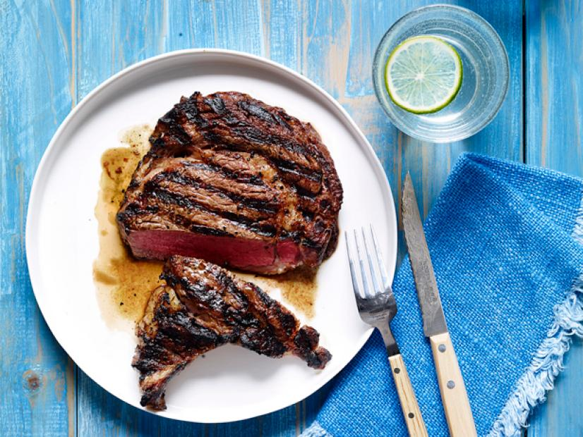

Grilled Steak

Description
Grilled steak with charred outside, seasoned to perfection, with a warm pink center
Ingredients
- 12 oz. boneless ribeye or New York strip steaks
- 2 table spoons of olive oil or butter
- Salt, pepper, and garlic salt
Steps
- About 25 minuted before grilling, remove steaks from refrigerator and coat with oil or butter, and then add seasonings
- Heat grill to high
- Grill steaks for about 4-5 minutes until lightly brown and charred, and then flip steaks to continue grilling for roughly 3-5 minutes for medium rare
- Finally, remove steaks and wrap in foil to rest for about 5 minutes